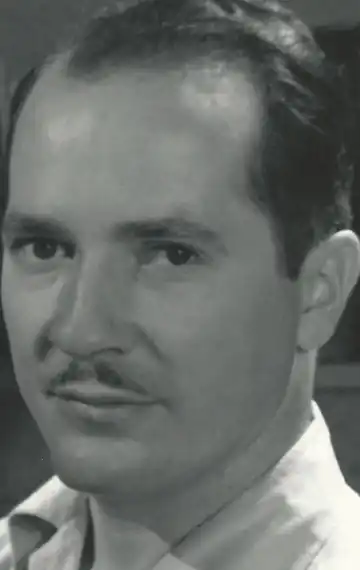
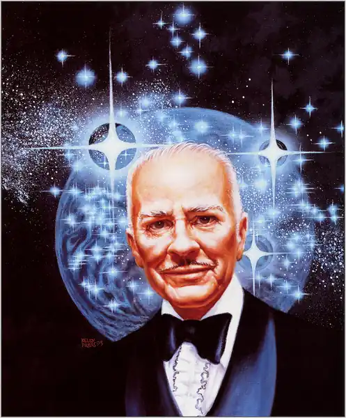

Хайнлайн – ‘декан письменників-фантастів', єдиний володар премії ‘Хьюго' (‘Hugo Award') за п'ять романів. Відомий фільм "Зоряний десант' (‘Starship Troopers') був знятий за мотивами однойменного роману Хайнлайна.
Роберт Енсон Хайнлайн народився в Батлере, Міссурі (Butler, Missouri), 7 липня 1907-го. У нього було три брати і три сестри. Своє дитинство він провів у Канзас-Сіті (Kansas City), де його батько Рекс Айвор Хайнлайн (Rex Ivar Heinlein) працював у Мидлендской компанії сільгоспмашин. Любов до читання і точних наук Роберту прищепив його дід, д-р Алва Лайл (Alva Lyle), якого онук відвідував практично кожне літо в Батлере. Канзас-Сіті, як відомо, належить до регіону під назвою ‘біблійний пояс', де поширений євангельський протестантизм. Це вплинуло на виховання Хайнлайна, чиї високі моральні принципи були притаманні йому до кінця життя.
В 1920-му Роберт почав навчання в школі Central High School в Канзас-Сіті. Він серйозно захопився астрономією і перечитав всю доступну літературу за темою. Юнак також залишився під враженням від теорії Дарвін (Darwin), що вплинула на його творчість. Отримавши середню освіту, Хайнлайн побажав піти по стопах свого брата Рекс (Rex) – вступити в Військово-морську академію США в Аннаполісі, штат Меріленд (U. S. Naval Academy, Annapolis, Maryland). Завдання виявилося не з простих, і поки Хайнлайн займався збором документів та рекомендаційних листів, він навчався в Університеті Міссурі (University of Missouri). У 1925-му його прийняли в якості кадета у Військово-морську академію. У 1929-му, по закінченню навчання, Роберт був розподілений на ‘Lexington', авіаносець ВМС США, де відповідав за радіозв'язок з повітряними суднами. До кінця 1933-го у нього виявили туберкульоз. У період лікування Хайнлайн винайшов водяний матрац, але не одержав патенту на винахід. У серпні 1934-го Хайнлайн у званні лейтенанта внаслідок слабкого здоров'я був змушений розпрощатися зі службою. Йому була призначена невелика пенсія. 21 червня 1929-го Роберт взяв у дружини Елінор Каррі (Elinor Curry). Незважаючи на те, що вони були знайомі ще зі школи, життя в шлюбі не склалася з перших же днів. З обов'язку служби, чоловікові доводилося багато часу проводити поза домом, що дуже злило Элинор, не желавшую слідувати за Робертом. У підсумку вона подала на розлучення в жовтні 1930-го. Через два роки, 28 березня 1932-го, Хайнлайн одружився на ‘полум'яної либералке', Леслин Макдональд (Leslyn MacDonald). Цей шлюб протримався 15 років. Коли з кар'єрою військового моряка було покінчено, Хайнлайн, володів широтою політичних поглядів, спробував потрапити до кола можновладців, в тому числі балотувався в Законодавче збори Каліфорнії (California). Провали на політичній арені і іпотека змусили Роберта шукати додаткове джерело доходу. У квітні 1939-го він за чотири дні написав непоганий розповідь, ‘Лінія життя' (‘Life-Line'), який був опублікований в журналі ‘Astounding Science Fiction'. З цього моменту практично всі свої гроші Хайнлайн заробляв письменницькою працею. До 1941-го Хайнлайн вже став почесним гостем на Worldcon-41, Всесвітньому конвент наукової фантастики. Він співпрацював з Айзеком Азімовим (Isaac Asimov) під час роботи в одній з Науково-дослідних лабораторії ВМФ, де познайомився і закохався в біохіміка і інженера Вірджинію Герстенфельд (Virginia Gerstenfeld). Після розлучення з Макдональд, серйозно злоупотреблявшей спиртним, Хайнлайн одружився на Герстенфельд в 1947-му, яка залишалася його вірною супутницею аж до його смерті. З третьою дружиною Роберт здійснив першу навколосвітню подорож у 1953-1954 рр. Хайнлайн писав малу прозу, але ніколи не забував і про велику літературній формі. В його письменницькій кар'єрі на передній план висуваються романи для юнацтва. Однак з часом він втомився від звання ‘провідного автора дитячих книг', і з 1961-го почав публікувати книги, значно розширили розуміння жанру наукової фантастики. Вершиною його творчості прийнято вважати роман ‘Місяць – сувора господиня' (‘The Moon Is a Harsh Mistress'). У 1983-му Роберт приїхав в Антарктиду, і, таким чином, побував на всіх шести материках. Він помер 8 травня 1988-го, коли працював над початком роману із серії "Світ як міф' (‘World as Myth').